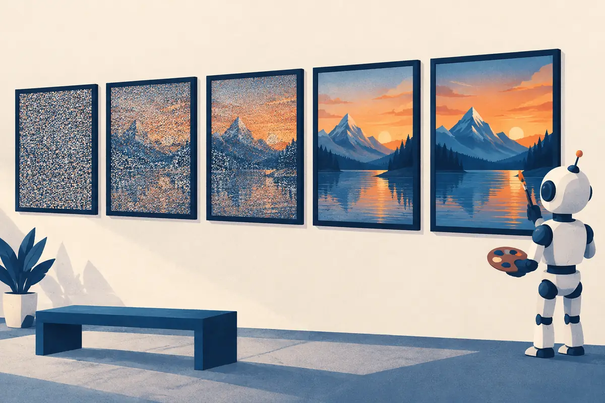

Variational autoencoders
An image generator has one job: produce new pictures that look like they came from the training set. The variational autoencoder (2013) was the first deep model to do this in a principled, trainable way, and two of its ideas, a smooth latent space and discrete image codes, still sit inside today's best image models.

By the end you can
- State the generative-modeling goal and write the VAE's ELBO: reconstruction minus KL.
- Compute the KL term for a Gaussian code and explain the reparameterization trick.
- Explain why VAE samples are blurry, what β-VAE changes, and how VQ-VAE turns images into tokens.
Take your best guess. Being wrong now helps the right answer stick later.
You train an ordinary autoencoder on faces, then feed its decoder a random code. What do you usually get?
- A sharp, realistic new face
- One of the training faces, exactly
- Often garbage: random codes tend to land in regions the decoder never saw
- An error, because decoders only accept codes from the encoder
Samples from a basic VAE trained on photos are famous for being…
- Blurry
- Over-sharpened, with ringing artifacts
- Exact copies of training images
- Black and white
The goal, and the VAE that reaches it
Generative modeling means learning the distribution $p(x)$ that the training images came from, well enough to draw new samples from it. That is hard because images live in a huge space: a 64×64 colour image is a point in 12,288 dimensions, and almost every point in that space looks like static. Real images occupy a thin, oddly shaped region of it.
The latent-variable idea (P5.2) makes this manageable. Suppose each image $x$ is explained by a short hidden code $z$ (pose, lighting, shape…). Pick a simple distribution for codes, the prior $p(z) = \mathcal{N}(0, I)$, and learn a decoder $p_\theta(x \mid z)$ that turns a code into an image. Then
$$p_\theta(x) = \int p_\theta(x \mid z)\, p(z)\, dz$$and sampling is easy: draw $z \sim \mathcal{N}(0, I)$, decode. The catch is training. To learn the decoder you need to know which codes explain each training image, the posterior $p_\theta(z \mid x)$, and that integral makes it intractable for a neural decoder.
An ordinary autoencoder (P6.4) dodges the question: its encoder maps each image to one code and the decoder learns to invert it. But nothing makes those codes fill $\mathcal{N}(0,I)$. They can bunch up or scatter with holes, so a random code decodes to junk. In December 2013, Kingma & Welling ("Auto-Encoding Variational Bayes"), and independently Rezende, Mohamed & Wierstra (2014), showed how to train an encoder and decoder together so that the codes do fill the prior: the variational autoencoder.
Encoder, decoder and the ELBO
A VAE replaces the impossible posterior with a learned guess, the encoder $q_\phi(z \mid x)$. For each image it outputs a Gaussian over codes: a mean vector $\mu$ and a standard-deviation vector $\sigma$, so $q_\phi(z \mid x) = \mathcal{N}(\mu, \operatorname{diag}\sigma^2)$. Encoder and decoder are trained together by maximizing the evidence lower bound (ELBO):
$$\log p_\theta(x) \;\ge\; \underbrace{\mathbb{E}_{z \sim q_\phi(z\mid x)}\big[\log p_\theta(x \mid z)\big]}_{\text{reconstruction}} \;-\; \underbrace{\mathrm{KL}\big(q_\phi(z \mid x)\,\|\,p(z)\big)}_{\text{stay near the prior}}$$- Reconstruction: codes drawn from the encoder's Gaussian should decode back to $x$. With a Gaussian decoder this is, up to constants, minus the squared error $\|x - \hat x\|^2$.
- KL term: each image's code distribution should stay close to the prior $\mathcal{N}(0, I)$ (KL divergence, P1.6). This is the regularizer that packs codes into the disk you will sample from.
Why a lower bound? The gap between $\log p_\theta(x)$ and the ELBO is exactly $\mathrm{KL}(q_\phi(z\mid x)\,\|\,p_\theta(z\mid x))$, how far the encoder's guess is from the true posterior. Raising the ELBO both improves the model and makes the encoder a better guesser. Training minimizes the negative ELBO with ordinary gradient descent.
One snag: the loss contains a sample $z \sim q_\phi$, and you can't backpropagate through "draw a random number". The reparameterization trick rewrites the sample as
$$z = \mu + \sigma \odot \varepsilon, \qquad \varepsilon \sim \mathcal{N}(0, I)$$($\odot$ is element-wise multiplication). The randomness now sits in $\varepsilon$, which doesn't depend on any parameter, and $z$ is a plain differentiable function of $\mu$ and $\sigma$. Gradients flow from the decoder, through $z$, into the encoder.
What does the reparameterization trick achieve?
- It removes the KL term from the loss
- It makes the encoder deterministic
- It replaces the Gaussian prior with a uniform one
- It moves the randomness into $\varepsilon$, so $z = \mu + \sigma \odot \varepsilon$ can be backpropagated through to $\mu$ and $\sigma$
The KL term, and why samples blur
For a diagonal Gaussian code and a standard-normal prior, the KL term has a closed form, summed over the latent dimensions $j$:
$$\mathrm{KL}\big(\mathcal{N}(\mu, \sigma^2)\,\|\,\mathcal{N}(0, 1)\big) = \tfrac{1}{2}\sum_j \big(\mu_j^2 + \sigma_j^2 - 1 - \log \sigma_j^2\big)$$It is zero only when $\mu_j = 0$ and $\sigma_j = 1$. The $\mu^2$ part pulls codes toward the origin; the $\sigma^2 - 1 - \log\sigma^2$ part stops each code from shrinking to a point. Overlapping, fuzzy codes are what make the latent space smooth.
Worked example
A 1-D code with $\mu = 1$ and $\sigma = 0.5$:
- $\mu^2 = 1$ and $\sigma^2 = 0.25$
- $\log \sigma^2 = \ln 0.25 \approx -1.386$
- $\mathrm{KL} = \tfrac{1}{2}(1 + 0.25 - 1 + 1.386) = \tfrac{1}{2}(1.636) \approx 0.818$ nats
Two cases, one dimension each. Use $\ln 4 \approx 1.386$.
- $\mu = 0.6$, $\sigma = 1$: KL $=$
- $\mu = 0$, $\sigma = 2$: KL $\approx$ (too wide is penalized too)
Playground: walk the latent space
A toy decoder: left–right in $z$ morphs round → star, down–up morphs wide → tall. Blue dots are training codes. Drag the orange dot, or use the sliders.
Why samples blur. The squared-error reconstruction asks for the image that is closest on average to every image the code might stand for. If a code is consistent with a strand of hair being slightly left or slightly right, the best squared-error answer is the average of both: a soft smear. Add the noise in $z$ and a decoder that can't afford sharp guesses, and VAE samples come out smooth but blurry, while GANs (G1.2) and diffusion (G1.3) produce crisp detail.
β-VAE (Higgins et al., 2017) multiplies the KL term by a weight $\beta$. With $\beta > 1$ the codes are pushed harder toward the prior, which tends to give disentangled axes (one dimension for rotation, one for size…) at the cost of even blurrier reconstructions. Turning $\beta$ down does the opposite, and that is how VAEs are used in modern image models: Stable Diffusion's autoencoder (G1.4) uses only a tiny KL weight, so it reconstructs sharply while keeping its latent space well-behaved.
A code has $\mu = 0$ and $\sigma = 1$ in every dimension. What is its KL to the prior $\mathcal{N}(0, I)$?
- 0, because it is the prior; but then the code carries no information about the image
- 1 per dimension
- It is undefined
- Infinite
VQ-VAE: discrete codes, and the road to image tokens
In 2017, van den Oord, Vinyals & Kavukcuoglu ("Neural Discrete Representation Learning") replaced the Gaussian code with a discrete one. The VQ-VAE encoder outputs a grid of vectors, and each vector is snapped to the nearest entry of a learned codebook (512 vectors in their image experiments). The image becomes a grid of integers, the codebook indices.
- Quantize: replace each encoder vector $z_e$ with its nearest codebook vector $e_k$, and remember $k$.
- Train through the snap: "nearest" has no gradient, so a straight-through estimator copies the decoder's gradient back to $z_e$ as if the snap were not there. Two extra terms pull codebook vectors toward the encoder outputs and keep the encoder "committed" to its chosen codes.
- Generate: train a separate autoregressive model (originally a PixelCNN) on the grids of integers, sample a new grid, decode it.
Look at that last step again: an image becomes a sequence of tokens, and a sequence model learns to write new ones. That is exactly how LLMs treat text. VQ-VAE's descendants carried the idea forward: DALL·E (2021) turned each 256×256 image into a 32×32 grid of 8,192-way tokens and generated them with a 12-billion-parameter transformer (G1.6); VQGAN (Esser et al., 2021) added a GAN loss for sharper decodes; and neural audio codecs turn sound into tokens the same way (A1.3).
Explain like I'm 5
Imagine describing every drawing in a big box with just two dials: one for "how pointy" and one for "how tall". A friend who only hears the dial numbers has to redraw the picture.
A VAE plays this game, with one extra rule: your dial settings must be a little wobbly, and must mostly stay near the middle. Because of the wobble, your friend learns that nearby settings mean nearby drawings. Because of the "stay near the middle" rule, there are no empty corners. So later you can spin the dials to any middle-ish setting and your friend draws a brand-new, sensible picture.
Where it breaks: real VAEs use hundreds of dials that nobody chose by hand, and the "friend" hedges on details it isn't sure about, which is why its drawings come out a bit smudgy.
What does VQ-VAE's codebook do?
- It stores whole training images for lookup
- It replaces the decoder
- It snaps each encoder vector to its nearest learned entry, turning the image into a grid of integer tokens
- It adds Gaussian noise to the code
What are the two terms of the VAE loss, and what would go wrong if you dropped each one?
Which expression is the ELBO that a VAE maximizes?
- $\mathbb{E}_q[\log p(x\mid z)] + \mathrm{KL}(q(z\mid x)\,\|\,p(z))$
- $\mathbb{E}_q[\log p(x\mid z)] - \mathrm{KL}(q(z\mid x)\,\|\,p(z))$
- $\log p(z) - \log q(z \mid x)$, with no expectation
- $\|x - \hat x\|^2$ alone
From P1.6: KL divergence is not symmetric. In the VAE's KL term, which distribution comes first?
- The prior, $\mathrm{KL}(p(z)\,\|\,q(z\mid x))$
- The decoder, $\mathrm{KL}(p(x\mid z)\,\|\,p(x))$
- It doesn't matter, KL is symmetric
- The encoder, $\mathrm{KL}(q_\phi(z\mid x)\,\|\,p(z))$: the expectation is taken under the encoder's distribution
Why are basic VAE samples blurry?
- The squared-error reconstruction rewards averaging over uncertain details, and the noisy code makes details uncertain
- The decoder has too many parameters
- The KL term adds blur filters to the image
- The encoder downsamples images before the decoder sees them
A β-VAE uses $\beta = 4$. Compared with a standard VAE ($\beta = 1$), you expect…
- Sharper reconstructions and a messier latent space
- Exactly the same model
- Codes pushed harder toward the prior: often more disentangled axes, blurrier reconstructions
- Discrete codes
Key takeaways
- Generative modeling = learn $p(x)$ well enough to sample new data; latent-variable models decode simple codes $z \sim \mathcal{N}(0, I)$.
- VAE loss = negative ELBO: reconstruction error + KL$(q(z\mid x)\,\|\,\mathcal{N}(0, I))$.
- The reparameterization trick $z = \mu + \sigma \odot \varepsilon$ makes sampling differentiable.
- VAEs give smooth latent spaces but blurry samples; β trades detail for regularity.
- VQ-VAE snaps codes to a codebook, turning images into tokens for transformers.
Add this lesson's cards to your spaced-review deck.